Feature guide · Songs
The catalog is
the band's memory.
Open Songs from the menu and you get every tune the band knows — with the key you play it in, its tempo, how the band rates it and what still needs work. Header shows a live count (SONGS 45) and a row of toggles to shape the view.
The eye toggle
Show as much, or as little, as you want.
Tap the eye in the header to switch between a clean, scannable list of titles and a rich view packed with detail. The second row of round toggles then lets you layer in exactly the columns you care about — status, ratings, artist, key, BPM and more.
- 1Titles only — a fast, alphabetical index when you just need to find a song.
- 2Detail view — adds artist, the amber key / transpose, BPM, duration and a status glyph per row.
- 3Per-column toggles — flip individual details on or off so the list matches the moment.
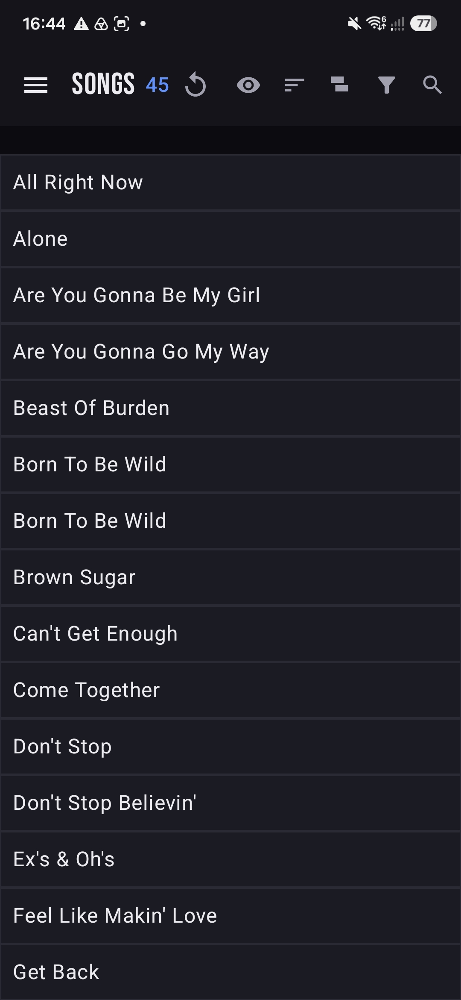

The song sheet
Every song, on the record.
Open a song to see and edit its details in one sheet. Set the band's status, the key you actually play it in against the original, your BPM, the duration, free-text comments and any flags. Change the status right from the list, too — tap the glyph and pick Need practice, Ready for stage or Suggested.
Our key vs. original. BandPilot tracks both, so a song transposed for your singer shows up clearly as, say, Dm → Cm.
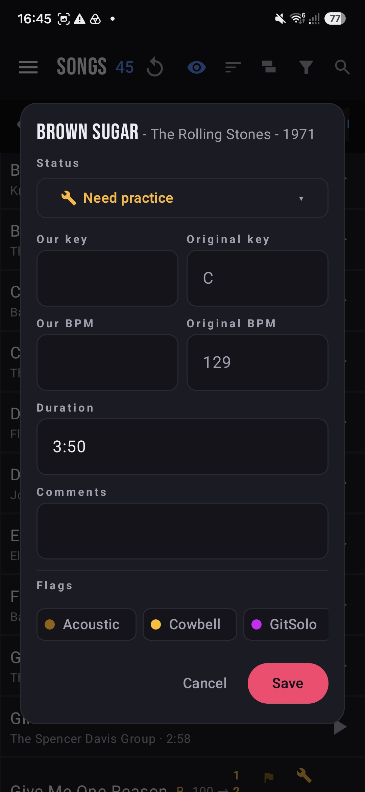
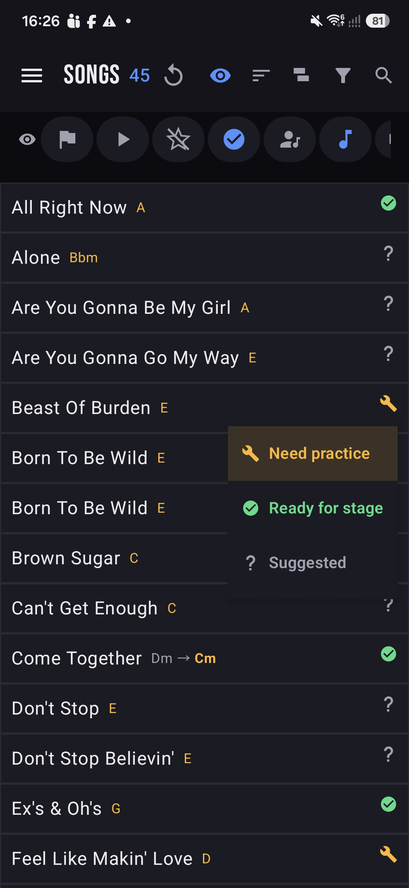
Group by status
Know what's stage-ready at a glance.
Group the catalog by status and it collapses into three lanes with live counts. It's the fastest way to see where the band stands — and what to rehearse next.
Locked in and gig-ready. Build sets straight from this lane.
Chosen, not yet tight — the shortlist for your next rehearsal.
Fresh ideas the band can rate and vote on.
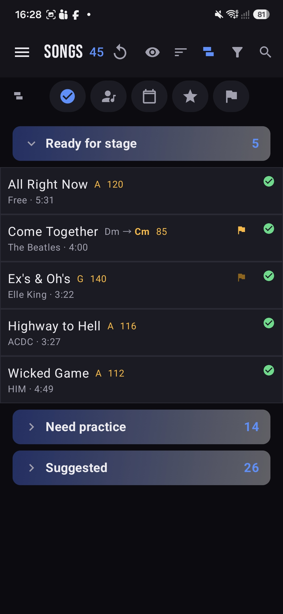
Group by anything
Slice the set the way your night runs.
Beyond status, group the catalog by decade or by artist — each group folds up with its own count so a 45-song list stays readable. Planning a 70s block, or every Rolling Stones tune you cover? It's two taps away.
- ↓By decade — 1960s, 1970s, 1980s… right through to 2020s, plus an Unknown year bucket.
- ↓By artist — every band you cover, sorted with the most-played up top.
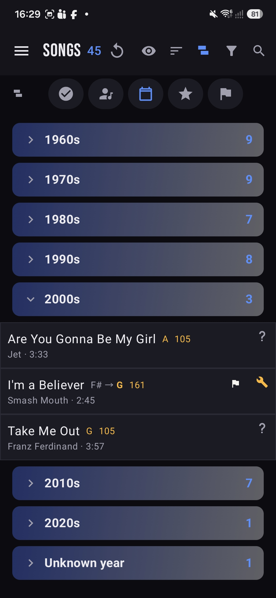
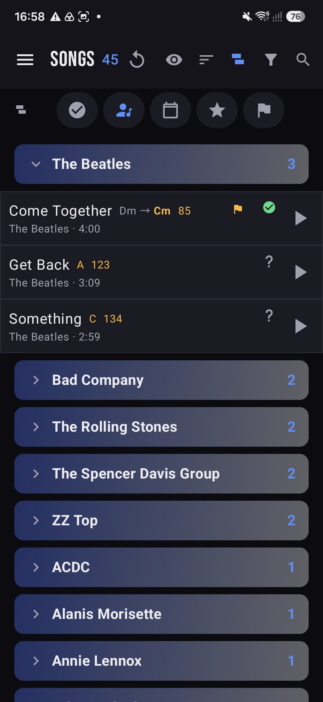
Flags
Little reminders that save a rehearsal.
Flags are colour-coded tags you attach to songs so nothing gets forgotten on the night — the acoustic guitar, the cowbell, the solo someone still has to learn. Group by flag to see every song that needs the same thing.
Acoustic guitar is required.
Cowbell is used.
Joe needs to learn the guitar solo.
Vocal harmony needs practice.
Keyboard is required.
Your flags, your labels. The set above is an example — a band defines its own flags and what each one means.
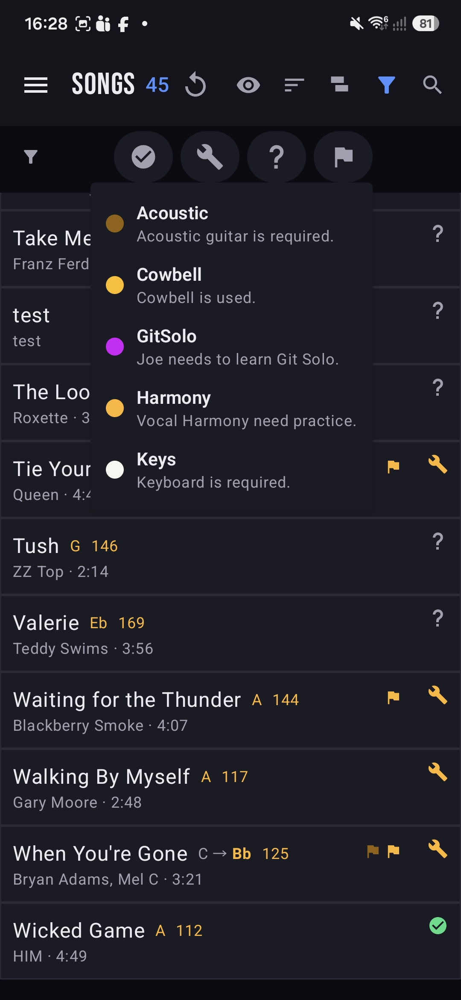
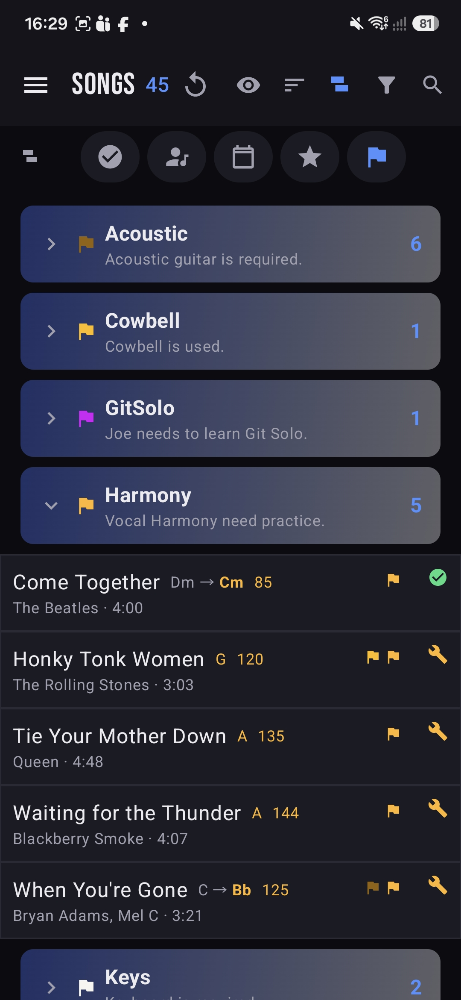
Voting & veto
The setlist is a group decision.
Every member rates songs one to five stars. Expand a song to see how each person voted and the band average — so the setlist reflects the whole room, not just whoever shouts loudest. And when a song is a hard no for someone, they can Veto it.
- ★Rate any song from your own row — your stars roll into the band average.
- ▾Expand a song to see every member's rating side by side.
- ⛔Veto marks a song you can't or won't play — it shows in red for the whole band to see.
- ↕Sort by rating to float the band's favourites to the top.
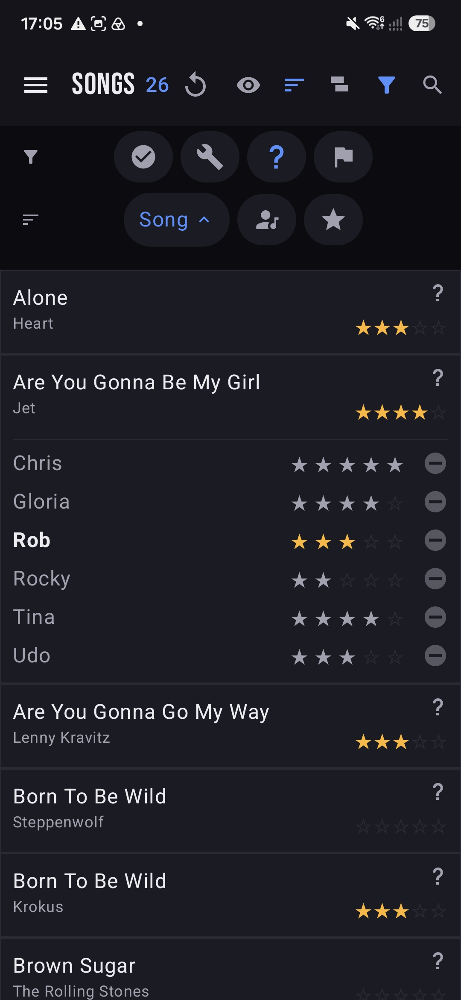
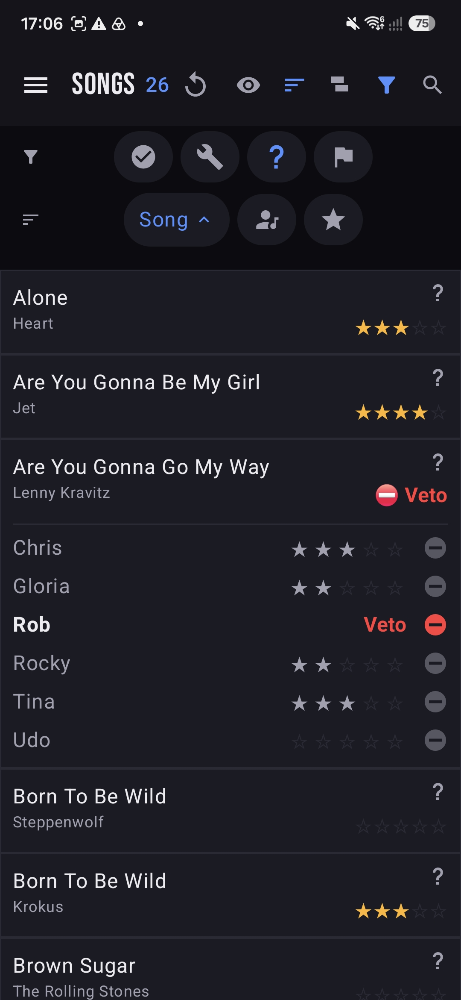
Media & practice
Learn it and drill it, without leaving the app.
Each song carries its own links — YouTube (studio, live, karaoke, lyrics), Spotify and audio versions. Play them inline, or open the practice player and set an A/B loop to hammer the tricky sixteen bars until they stick.
- ▶One tap to play — the play button on any row opens that song's media.
- ▦Pick a version — switch between YouTube, Studio, Karaoke, Live and Lyrics.
- 🔁A/B loop — mark point A and point B and the player repeats just that section.
- ↗Spotify & more open in their own apps when you want the full track.
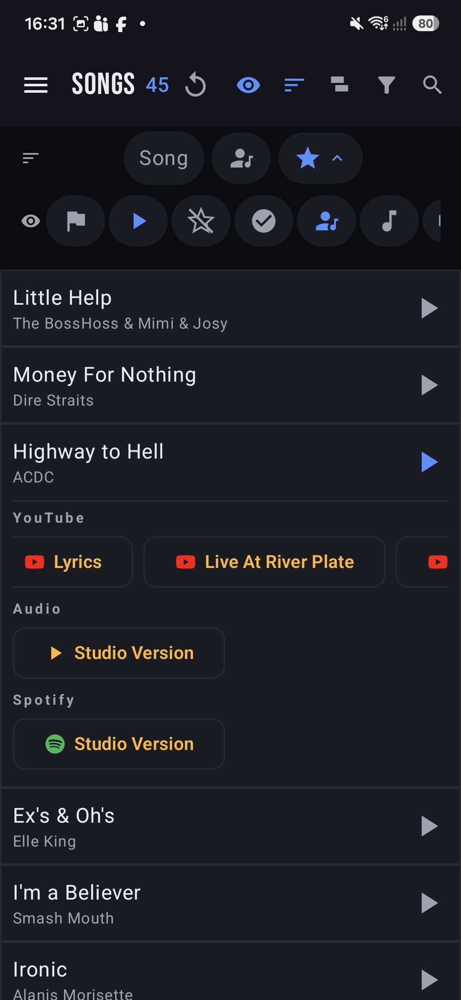
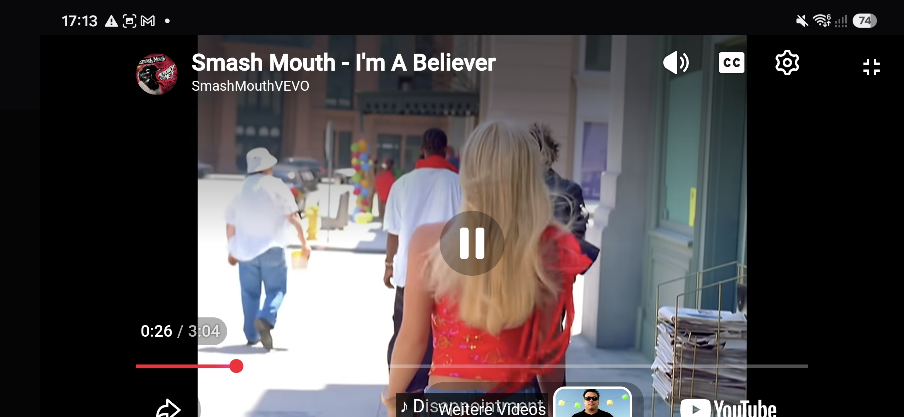
Next up: rehearsals.
See how songs become a running order, complete with absences and email updates.